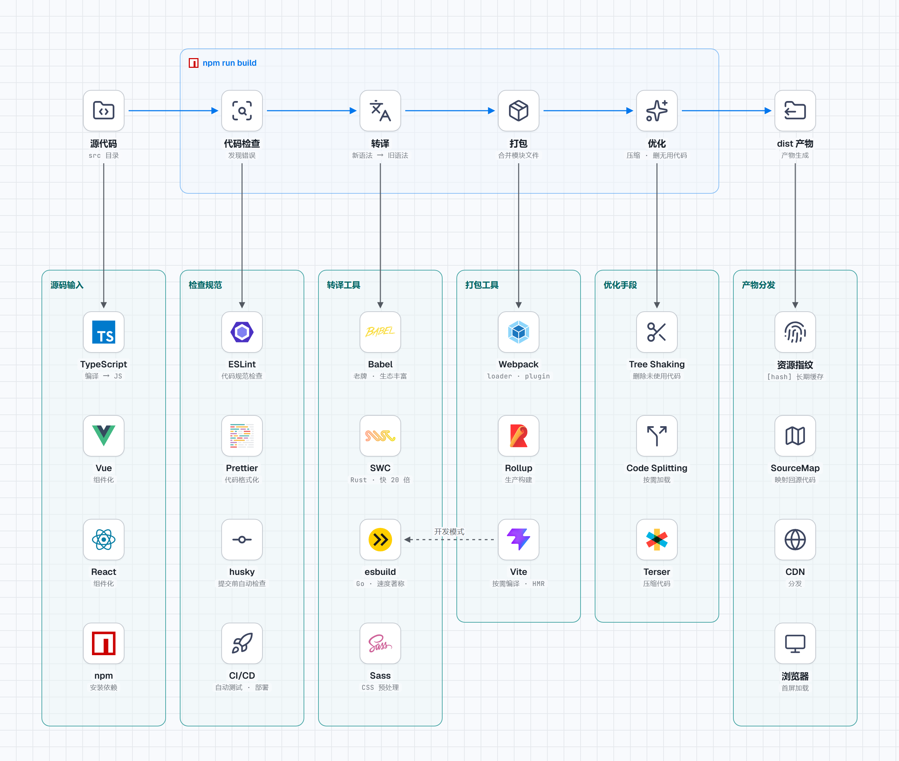

前端工程化全貌
本章目录 · 1 节
交互入口：本章模拟器位于原课程页面，需联网打开。书中保留原理、代码与操作说明；按代码在本地练习时，先建独立的练习目录。
前端工程化全景
核心问题 如何把你写的代码，变成用户浏览器能跑的网站？ 这就像是问：如何把原材料变成成品，还要保证质量、控制成本？本章将带你深入理解前端工程化的核心概念和构建流程。
1. 工程化的动机
1.1 从简单到复杂：前端开发的演变
回顾十年前的前端开发，那时候的我们工作方式非常简单：写几个 HTML 页面，内嵌一些 CSS 和 JavaScript，直接把文件拖到浏览器里就能看效果，部署的时候也只需要把文件夹上传到服务器，一个网站的总代码量可能也就几十 KB。那是一个"所见即所得"的时代，开发流程简单直接，几乎没有"工程化"这个概念。
但现代前端开发完全变了样。我们现在用 TypeScript 代替 JavaScript，这意味着需要编译；我们用 Vue 或 React 的组件化开发方式，需要额外的转换；我们用 Sass 或 Less 写 CSS，需要预处理；我们通过 npm 安装各种依赖包，最终需要打包。一个中大型项目的前端依赖可能上千个，总大小几百 MB，这与十年前的"简单直接"形成了鲜明对比。
👴 十年前的开发方式
- 写几个 HTML + CSS + JS 就是一个项目
- 直接拖到浏览器就能看效果
- 上传文件夹到服务器就完成部署
- 整个项目代码量通常只有几十 KB
现代的开发方式
- 使用 TypeScript，需要编译才能运行
- 使用 Vue/React，需要转换成原生 JS
- 使用 npm 包管理，需要打包合并
- 项目依赖动辄几百 MB
这就是"前端工程化"要解决的问题：如何管理复杂度，让开发效率更高、代码质量更好、用户体验更优。
1.2 案例：了解构建原理
你可能会说："我用 Vite 或者 Create React App，开箱即用，为什么还需要了解这些构建原理？" 让我讲一个真实的故事，你就会明白为什么这些知识如此重要。
小明的踩坑记 小明是一个刚入职的前端新人，公司用的是 Vite 搭建的项目。有一天，产品经理跑过来说首页加载太慢了，用户都在抱怨，需要尽快优化。
小明立刻行动起来：他压缩了图片、实现了路由懒加载、启用了 Gzip 压缩...一顿操作猛如虎，但首页加载速度依然很慢，问题根本没有解决。
后来他请教师傅，师傅打开浏览器的开发者工具，看了一眼网络请求，立刻发现了问题所在：vendor.js 文件竟然有 2MB！原来小明为了使用某个日期格式化函数，直接引入了 moment.js 整个库，而 moment.js 包含了 100 多种语言的 locale 文件，大部分都是项目根本用不到的。
解决方案很简单：把 moment.js 换成 dayjs，或者按需引入 date-fns。这样改动之后，2MB 的体积瞬间变成了 2KB，首页加载速度提升了十几倍。
小明从此明白了一个道理：不了解构建和打包原理，你连问题出在哪都不知道，更别提解决问题了。
核心启示 构建工具不是黑魔法，理解它的工作原理能让你在遇到问题时快速定位、精准解决。更重要的是，它能在设计架构和选择依赖时帮你选得更准。
2. 核心概念：转译、打包、构建
🤔 这些概念和构建有什么关系？ 转译、打包就是流水线上的关键工序。
当你运行 npm run build 时，构建工具会依次执行：
- 代码检查 → 发现错误
- 转译 → 把新语法翻译成浏览器能懂的代码
- 打包 → 把分散的文件合并起来
- 优化 → 压缩体积、删除无用代码
所以，转译和打包是构建流程的核心环节。理解它们，你才能知道构建工具到底在做什么，为什么有时候构建很慢，为什么有时候打包后体积很大。
在深入学习具体工具之前，我们需要先搞清楚这几个核心概念。为了帮助你更好地理解，我们用一个餐厅的比喻来类比它们之间的关系。
2.1 用餐厅比喻理解三个概念
想象你经营一家餐厅，每天要为顾客提供各种美食。这个过程中涉及到的环节，与前端工程化的三个核心概念惊人地相似：
| 概念 | 🍽️ 餐厅比喻 | 实际作用 | 具体例子 |
|---|---|---|---|
| 转译 | 把中文菜谱翻译成英文，让外国厨师也能看懂 | 把新语法转换成浏览器能理解的旧语法 | 你写 const name = user?.name，转译后变成 var name = user && user.name |
| 打包 | 把各桌点的菜装成一个个外卖盒，方便配送 | 把分散的模块文件合并成少数几个文件 | 你写了 50 个 .js 文件，打包后变成 2 个文件 |
| 构建 | 从接单、做菜、打包到配送的完整流程 | 从源代码到生产代码的完整转换过程 | 执行 npm run build 后，src 文件夹变成 dist 文件夹 |
2.2 转译（Transpile）：代码的"翻译官"
转译，顾名思义就是"转换+编译"，它的核心作用是把一种编程语言（或其新版本）转换成另一种（或其旧版本）。你可能会有疑问：为什么要这样做？直接写浏览器支持的代码不就行了吗？
答案在于浏览器兼容性问题。虽然 JavaScript 每年都会发布新版本，带来更强大的语法和 API，但浏览器的更新速度远远跟不上。如果你使用了最新的 ES2022 语法，在旧版浏览器上可能完全无法运行。转译工具的作用就是把你的"超前代码"转换成"保守代码"，确保在所有浏览器上都能正常运行。
🔧 转译示例：看看转译做了什么 我们看一个具体的例子。下面是你写的代码，使用了 ES2020 的可选链操作符和空值合并操作符：
// 你写的（ES2020+）
const result = data?.items?.map(item => item.name) ?? []
这段代码很简洁优雅，但在旧浏览器上会报语法错误。转译工具会把它转换成等价的、兼容性更好的代码：
// 转译后（ES5 兼容版本）
var _data$items, _data$items$map
var result =
(_data$items$map =
(_data$items = data == null ? void 0 : data.items) == null
? void 0
: _data$items.map(function (item) {
return item.name
})) != null
? _data$items$map
: []
可以看到，一行简洁的代码被转换成了多行"啰嗦"的代码，但后者可以在任何浏览器上正常运行。
常用的转译工具：
- Babel 是最老牌、生态最丰富的 JavaScript 转译器，几乎可以处理所有现代语法。它的插件系统非常强大，但也因为灵活性高导致配置相对复杂。
- SWC 是用 Rust 语言重写的转译器，速度比 Babel 快 20 倍以上，正在被越来越多的项目采用，包括 Next.js 等知名框架。
- esbuild 是用 Go 语言编写的，同样以速度著称，Vite 在开发模式下就使用它来快速转译。
🔍 我的项目用的是什么转译工具？ 你不需要刻意选择，通常是由项目脚手架决定的：
| 项目类型 | 默认转译工具 |
|---|---|
| Vite 项目 | esbuild（开发模式）+ esbuild/rollup（生产模式） |
| Create React App | Babel |
| Next.js | SWC（新版本）/ Babel（旧版本） |
| Vue CLI | Babel |
想知道自己项目用的是什么？打开 package.json，搜索 babel、@babel/core 这些关键词。如果找到了，说明用的是 Babel；如果没有，很可能是 esbuild 或 SWC。
其实你不需要关心这个——这些工具对开发者是"透明"的，你只管写代码，它们会在后台默默工作。
2.3 打包（Bundle）：模块的"打包员"
打包是指把多个分散的模块文件合并成一个（或几个）文件的过程。在早期的前端开发中，我们习惯把所有代码写在一个 JS 文件里，但随着项目规模增大，这种方式变得难以维护。现代前端采用模块化开发，每个功能一个文件，但浏览器加载大量小文件会带来性能问题，这就需要打包工具来帮忙。
📦 什么是 ES 模块？ 你可能听说过"ES 模块"这个词，它到底是什么？
先区分两个概念：
- ECMAScript（ES）：是 JavaScript 的语言标准规范，定义了语法和 API
- ES 模块：是 ECMAScript 标准中定义的模块化方案，通过
import和export语法导入导出代码
打个比方：ECMAScript 就像"普通话标准"，而 ES 模块就像"普通话中的某种表达方式"。
// utils.js - 导出模块
export function add(a, b) { return a + b }
export function subtract(a, b) { return a - b }
// main.js - 导入模块
import { add, subtract } from './utils.js'
console.log(add(1, 2)) // 3
ES 版本小知识：ECMAScript 每年都会发布新版本：
- ES5（2009）：经典版本，几乎所有浏览器都支持
- ES6/ES2015：里程碑式大更新，引入了
let/const、箭头函数、ES 模块、class等 - ES2016-ES2024：每年持续添加新特性（如
async/await、可选链?.等）
ES 模块正是在 ES6（2015年）引入的。在此之前，JavaScript 没有官方的模块系统，开发者只能用各种"民间方案"（如 CommonJS、AMD），这导致了模块规范不统一的问题。ES 模块统一了这些规范，成为现代前端开发的基石。
为什么需要打包？ 主要有三个原因：首先，虽然现代浏览器已经支持 ES 模块，但在生产环境中加载上百个小文件仍然会带来性能开销；其次，打包过程可以进行 Tree Shaking，自动删除未使用的代码，减小文件体积；最后，打包后可以做代码分割，实现按需加载，提升首屏速度。
📁 打包前后对比：看看打包做了什么 打包前的源码结构（分散的多个文件）：
src/
├── index.js (入口文件，导入其他模块)
├── utils/
│ ├── a.js (工具函数 A)
│ ├── b.js (工具函数 B)
│ └── c.js (工具函数 C)
└── components/
└── Button.vue (按钮组件)
打包后的产物（合并后的少数文件）：
dist/
├── index.[hash].js (主入口代码)
├── vendor.[hash].js (第三方库代码)
└── assets/
└── logo.[hash].png (静态资源)
打包工具会分析文件之间的依赖关系，按照正确的顺序把它们合并到一起，同时做各种优化。
👇 动手试试看： 原课程的交互演示展示了代码分割如何实现按需加载。点击不同的路由，观察哪些代码被加载了：
2.4 构建（Build）：完整的"生产线"
构建是一个更广义的概念，它涵盖了从源代码到可部署产物的完整转换过程。一个完整的构建流程通常包括以下步骤：
- 预编译阶段：把 TypeScript 编译成 JavaScript，把 Sass 编译成 CSS
- 代码检查阶段：运行 ESLint 检查代码规范，运行 TypeScript 类型检查
- 依赖解析阶段：分析模块之间的依赖关系，构建依赖图
👇 动手看看： 原课程的交互演示展示了项目中模块之间的依赖关系图谱。点击不同的节点，观察模块是如何相互引用的：
- 转译阶段：使用 Babel 等工具转换语法，确保兼容性
- 打包阶段：合并模块文件，应用 Tree Shaking 删除无用代码
- 优化阶段：压缩代码、分割代码、提取公共模块
- 资源处理阶段：压缩图片、生成雪碧图、处理字体文件
- 产物生成阶段：输出最终文件到 dist 目录
理解这个完整流程非常重要，因为当构建出现问题时，你需要知道问题出在哪个环节，才能有针对性地解决。
3. 实战：一个团队的工程化演进之路
🤔 什么是"工程化"？ 说了半天"工程化"，它到底是什么意思？
简单来说，工程化就是把"手工作坊"变成"现代化工厂"的过程。
想象一下：你在家做饭，想吃什么就做什么，很自由。但如果要开一家餐厅，每天服务几百个顾客，就不能再"想做什么做什么"了——你需要标准化的菜谱、规范的操作流程、统一的原材料采购，这样才能保证每道菜的质量稳定、出餐效率高。
前端开发也一样。一个人写小项目，怎么写都行。但团队协作、项目变大后，就需要：
- 统一的代码规范：大家都按同样的方式写代码
- 自动化工具：让机器帮我们检查错误、转换代码、打包文件
- 标准化流程：从开发到上线有一套清晰的步骤
这就是工程化：用工具和规范，让开发更高效、代码更可靠、协作更顺畅。
讲了这么多概念，我们看一个真实的案例：某创业公司是如何从"直接写 HTML"一步步进化到"现代化工程化流程"的。通过这个案例，你会更直观地理解工程化到底解决了什么问题。
📖 背景知识：jQuery、Vue、React 是什么？ 在开始案例之前，先简单介绍一下这些名词：
- jQuery：十多年前最流行的 JavaScript 库，用来简化 DOM 操作（比如"点击按钮后改变文字"）。现在已经被 Vue、React 等现代框架取代，但很多老项目还在用。
- Vue / React：现代前端开发的主流框架。它们让你用"组件"的方式组织代码，数据和视图自动同步，开发效率更高。你现在学的很可能就是其中之一。
简单理解：jQuery 是"手动挡"，你要自己操作每一个元素；Vue/React 是"自动挡"，你只需要告诉它数据是什么，它会自动更新界面。
3.1 演进的全景图
🤔 什么是脚手架？ 脚手架就是帮你"搭好项目骨架"的工具。比如
npm create vite@latest会自动创建一个配置好的项目，里面有目录结构、配置文件、示例代码，你直接开始写业务代码就行。
没有脚手架的时代：你要手动创建文件夹、写配置文件、安装依赖...一个项目搭建下来可能要半天。 有脚手架的时代：一条命令，30 秒搞定。
下面这张表展示了工程化演进的四个阶段，你可以看到构建工具、脚手架、框架是如何一步步进化的：
| 阶段 | 构建工具 | 脚手架 | 框架 | 核心变化 |
|---|---|---|---|---|
| 阶段一：原始时代 | 无（直接运行） | 无（手动建文件） | jQuery | 没有任何工具，全靠手工 |
| 阶段二：模块化 | Webpack + Babel | 简单模板复制 | Vue 2 / React | 开始有构建流程，但配置很麻烦 |
| 阶段三：现代化 | Vite | create-vite / create-react-app | Vue 3 / React 18 | 开箱即用，零配置启动 |
| 阶段四：持续优化 | Vite + 插件 | 自定义脚手架模板 | 框架 + TypeScript | 团队规范化、模板化 |
从表格中你能看到什么？ 我们逐行解读这张表：
阶段一 → 阶段二：从"没有工具"到"有了工具"。这是质的飞跃——你开始用构建工具处理代码，用框架组织项目。但代价是配置复杂，新人上手难。
阶段二 → 阶段三：从"能用"到"好用"。Vite 把原来需要手动配置的东西都自动化了，脚手架一键生成项目，开发体验大幅提升。你现在大概率就处在这个阶段。
阶段三 → 阶段四：从"个人好用"到"团队高效"。当团队变大后，需要统一的技术栈和规范，这时候会自定义脚手架模板，让所有项目保持一致的风格。
总结一下：工程化演进不只是"构建工具变快了"，而是整个开发体验的升级——从手动搭建项目到脚手架一键生成，从复杂配置到开箱即用，从各自为战到团队规范。
3.2 阶段一：原始时代——全靠手工
为什么叫"原始时代"？因为这个阶段没有任何自动化工具，所有事情都要手动完成——创建文件夹、写代码、管理依赖、调试问题，全部靠人工。
在这个阶段，团队只有 3 个前端工程师，做一个管理后台项目。项目很小，大家各写各的，看起来没什么问题。但随着项目变大，问题开始暴露出来。
开发方式：
- 构建工具：无，直接写 HTML/JS/CSS，浏览器直接运行
- 脚手架：无，手动创建文件夹和文件
- 框架：jQuery，用选择器操作 DOM
这个阶段的特点：
- ✅ 优点：简单直接，没有学习成本，写完就能跑
- ❌ 缺点：代码一多就乱，团队协作困难，没有代码检查容易出 bug
查看当时的项目结构和代码方式 项目结构（手动创建）：
project/
├── index.html
├── login.html
├── css/
│ ├── bootstrap.css
│ └── custom.css
├── js/
│ ├── jquery.js
│ ├── bootstrap.js
│ └── app.js
└── images/
遇到的问题：
- 全局变量污染：所有变量都在全局命名空间，不同文件中的同名变量会互相覆盖
- 依赖管理混乱：jQuery 插件必须先加载 jQuery，script 标签顺序错了就报错
- 代码难以复用：想复用某个功能，只能复制粘贴代码
- 没有代码检查：变量拼写错误等低级问题，只能运行后才发现
当时的临时解决方案：
// 用自执行函数模拟模块化（IIFE 模式）
var ModuleA = (function () {
var privateVar = 'private' // 私有变量，外部无法访问
function privateFn() {
console.log(privateVar)
}
return {
publicMethod: function () {
privateFn() // 暴露公共方法
}
}
})()
// 依赖管理全靠注释说明
/**
* @requires jquery.js (must load first)
* @requires bootstrap.js
*/
这种开发方式在小项目中还能应付，但随着团队扩大到 8 人、项目变得越来越复杂，这些问题开始严重影响开发效率和代码质量，团队迫切需要一种更好的组织方式。
3.3 阶段二：模块化时代——开始有工具链
原始时代的问题积累到一定程度，团队终于决定引入现代化工具链。这是一个重要的转折点——从"手工劳动"进入"机械化生产"。
但这个阶段也有代价：工具链的学习成本很高，配置文件复杂，新人上手需要时间。
开发方式：
- 构建工具：Webpack + Babel，需要写配置文件
- 脚手架：复制旧项目模板，手动改配置
- 框架：Vue 2 / React，组件化开发
这个阶段的特点：
- ✅ 优点：模块化开发，代码可维护性大幅提升，有代码检查
- ❌ 缺点：配置复杂，启动慢，脚手架简陋容易出错
查看引入工具链后的变化 项目结构（Webpack + Vue 2 时代）：
my-project/
├── build/ # 构建配置（这个阶段配置很复杂！）
│ ├── webpack.base.js
│ ├── webpack.dev.js
│ └── webpack.prod.js
├── config/ # 环境配置
│ ├── index.js
│ ├── dev.env.js
│ └── prod.env.js
├── src/
│ ├── components/ # 组件
│ ├── views/ # 页面
│ ├── router/ # 路由
│ ├── store/ # 状态管理
│ ├── App.vue
│ └── main.js
├── static/ # 静态资源
├── .eslintrc.js # ESLint 配置
├── .babelrc # Babel 配置
├── package.json
└── index.html
配置文件示例（这就是为什么说"配置复杂"）：
// webpack.base.js - 仅仅是基础配置就有这么多内容
const path = require('path')
const VueLoaderPlugin = require('vue-loader/lib/plugin')
module.exports = {
entry: './src/main.js',
output: {
path: path.resolve(__dirname, '../dist'),
filename: '[name].[contenthash].js'
},
module: {
rules: [
{ test: /\.vue$/, loader: 'vue-loader' },
{ test: /\.js$/, loader: 'babel-loader', exclude: /node_modules/ },
{ test: /\.css$/, use: ['style-loader', 'css-loader'] },
{ test: /\.scss$/, use: ['style-loader', 'css-loader', 'sass-loader'] },
{ test: /\.(png|jpg|gif)$/, loader: 'url-loader', options: { limit: 8192 } }
]
},
plugins: [new VueLoaderPlugin()],
resolve: {
extensions: ['.js', '.vue', '.json'],
alias: { '@': path.resolve(__dirname, '../src') }
}
}
带来的改善：
- 模块化开发：每个文件就是一个模块，通过 import/export 清晰管理依赖关系
- 代码复用：组件和工具函数可以在不同项目中复用，不用再复制粘贴
- 代码质量：ESLint 在保存时自动检查，TypeScript 在编译时发现类型错误
- 性能优化：Webpack 的代码分割和懒加载让首屏加载速度大幅提升
新的痛点：
- 配置复杂：webpack.config.js 动辄几百行，新人很难上手
- 启动慢：冷启动 30 秒以上，改代码热更新要等 5 秒
- 脚手架简陋：复制旧项目模板，经常忘记改配置，导致各种奇怪问题
3.4 阶段三：现代化时代——开箱即用
阶段二的痛点（配置复杂、启动慢）困扰了开发者很多年。直到 2021 年，Vite 的出现彻底改变了这一切。
Vite 的核心理念是"约定优于配置"——它内置了合理的默认配置，你不需要写几百行配置文件，开箱即用。这就像从"自己组装电脑"变成了"买品牌机"，省去了大量折腾的时间。
2021 年之后，团队开始用 Vite 替代 Webpack，开发体验得到了质的提升。
开发方式：
- 构建工具：Vite，零配置启动，秒级热更新
- 脚手架：
npm create vite@latest，一键生成项目 - 框架：Vue 3 / React 18，更强大的组件系统
这个阶段的特点：
- ✅ 优点：秒级启动，热更新极快，配置简单，新人友好
- ❌ 缺点：生态还在完善中，某些特殊需求可能需要额外配置
Vite 带来的变化 项目结构（Vite + Vue 3 时代）：
my-project/
├── src/
│ ├── components/ # 组件
│ ├── views/ # 页面
│ ├── router/ # 路由
│ ├── stores/ # 状态管理（Pinia）
│ ├── assets/ # 静态资源
│ ├── App.vue
│ └── main.js
├── public/ # 公共资源
├── vite.config.js # 配置文件（简洁！）
├── package.json
└── index.html
配置文件对比（Vite 配置有多简洁）：
// vite.config.js - 整个配置文件就这么点
import { defineConfig } from 'vite'
import vue from '@vitejs/plugin-vue'
export default defineConfig({
plugins: [vue()],
resolve: {
alias: { '@': '/src' }
}
})
// 对比上面 Webpack 的配置，是不是简洁太多了？
| 对比项 | 阶段二（Webpack） | 阶段三（Vite） | 体验提升 |
|---|---|---|---|
| 创建项目 | 复制模板，手动改配置 | npm create vite@latest |
30 秒搞定 |
| 冷启动 | 30s+ | <1s | 快 30 倍 |
| 热更新 | 3-5s | <100ms | 快 30 倍 |
| 配置文件 | 几百行 | 几十行甚至不需要 | 大幅简化 |
实际体验对比：
# 阶段二：使用 Webpack
npm run dev
# 等待 30 秒...喝杯咖啡回来还在编译
# [INFO] Compiled successfully in 30123ms
# 修改代码 -> 保存 -> 等待 5 秒 -> 终于看到效果
# 阶段三：使用 Vite
npm create vite@latest my-project # 一键创建项目
cd my-project && npm install
npm run dev
# 等待 300 毫秒...还没反应过来就好了
# [INFO] ready in 312ms
# 修改代码 -> 保存 -> 瞬间看到效果
3.5 阶段四：持续优化——团队规范化
当工具链成熟后，团队开始关注更深层次的问题：如何让团队协作更高效？如何避免重复踩坑？如何统一代码风格？
这个阶段的核心是"规范化"——不只是工具好用，还要让团队所有人用同样的方式工作。
开发方式：
- 构建工具：Vite + 自定义插件，适配团队特殊需求
- 脚手架：团队内部脚手架模板，统一技术栈和规范
- 框架：Vue 3 / React 18 + TypeScript，类型安全
这个阶段的特点：
- ✅ 优点：团队协作高效，代码风格统一，新人入职有模板可循
- ❌ 缺点：需要投入时间维护脚手架和规范，有一定维护成本
这个阶段会做什么？
- 自定义脚手架模板：把团队常用的配置、目录结构、公共组件打包成模板，新项目一键生成
- 引入 TypeScript：让代码有类型检查，减少运行时错误
- 建立代码规范：ESLint 规则、Git 提交规范、代码审查流程
- 持续集成/持续部署（CI/CD）：代码提交后自动测试、自动部署
团队规范化阶段的项目结构 项目结构（团队内部模板 + TypeScript）：
my-project/
├── .husky/ # Git hooks（提交前自动检查）
├── src/
│ ├── components/ # 组件
│ ├── views/ # 页面
│ ├── router/ # 路由
│ ├── stores/ # 状态管理
│ ├── api/ # API 接口
│ ├── utils/ # 工具函数
│ ├── types/ # TypeScript 类型定义
│ ├── assets/ # 静态资源
│ ├── App.vue
│ └── main.ts # 注意是 .ts 不是 .js
├── public/
├── .eslintrc.cjs # ESLint 配置（团队统一规则）
├── .prettierrc # Prettier 配置（代码格式化）
├── tsconfig.json # TypeScript 配置
├── vite.config.ts # Vite 配置
├── package.json
└── README.md # 项目文档
团队规范化的具体体现：
// tsconfig.json - TypeScript 配置，类型安全
{
"compilerOptions": {
"target": "ES2020",
"strict": true, // 开启严格模式
"noImplicitAny": true, // 禁止隐式 any
"baseUrl": ".",
"paths": { "@/*": ["src/*"] }
}
}
// .eslintrc.cjs - 团队统一的代码规范
module.exports = {
extends: [
'plugin:vue/vue3-recommended',
'@vue/standard',
'@vue/typescript/recommended'
],
rules: {
'no-console': 'warn', // 禁止 console.log
'no-debugger': 'error', // 禁止 debugger
'vue/multi-word-component-names': 'error' // 组件名必须是多词
}
}
常见踩坑与解决方案：
坑一：引入整个库而不是按需引入
这是最常见的错误之一。很多时候我们只需要一个库中的某个函数，却不小心引入了整个库。
// ❌ 错误做法：引入整个 moment.js（2.5MB！）
import moment from 'moment'
const formattedDate = moment(date).format('YYYY-MM-DD')
// ✅ 正确做法：使用更轻量的 dayjs（2KB）
import dayjs from 'dayjs'
const formattedDate = dayjs(date).format('YYYY-MM-DD')
// 或者按需导入 date-fns 的函数
import { format } from 'date-fns'
const formattedDate = format(date, 'yyyy-MM-dd')
坑二：Tree Shaking 失效
Tree Shaking 是打包工具自动删除未使用代码的功能，但它需要正确的导入方式才能生效。
// ❌ 错误做法：这会引入整个 lodash（70KB+）
import _ from 'lodash'
_.debounce(fn, 200)
// ✅ 正确做法：只导入需要的函数
import debounce from 'lodash/debounce'
// 或者使用 lodash-es（ES 模块版本，支持 Tree Shaking）
import { debounce } from 'lodash-es'
👇 动手试试看： 原课程的交互演示展示了 Tree Shaking 的工作原理。勾选你需要的函数，观察打包后的体积变化：
坑三：没有使用文件 Hash，导致缓存问题
浏览器会缓存静态资源以提高加载速度，但如果文件名不变，更新代码后用户可能还在使用旧版本。
// ❌ 问题场景：文件名固定，用户缓存了旧版本
// <script src="/js/app.js"></script>
// ✅ 正确做法：使用 content hash
// Vite/Webpack 会自动处理：
// <script src="/js/app.a3f7b2c.js"></script>
// 内容变化时 hash 也会变化，浏览器会自动获取新版本
4. 原理深入：Vite 的性能原理
了解了实际案例后，来看 Vite 的工作原理，理解它为什么能比传统工具快这么多。
4.1 两种截然不同的工作方式
传统打包工具（如 Webpack）的工作方式是"先打包后服务"：在启动开发服务器之前，它必须先把整个应用的所有模块打包成一个或几个 bundle 文件。这个过程中需要遍历所有源文件、解析依赖关系、转换代码、合并文件，项目越大，这个过程就越慢。
传统打包工具的工作流程：
源代码 (100+ 文件)
↓
[构建时全部打包] ← 这一步非常耗时！
↓
Bundle (单个/几个大文件)
↓
浏览器请求 → 返回打包后的文件
Vite 的工作方式完全不同，它采用了"按需编译"的策略：启动时几乎不做任何打包工作，直接启动开发服务器。当浏览器请求某个模块时，Vite 才会实时编译这个模块并返回。
Vite 的工作流程：
源代码 (100+ 文件)
↓
[不打包！直接启动服务器] ← 几乎瞬间完成
↓
浏览器请求 index.html
↓
浏览器发现 <script type="module">，继续请求 JS 文件
↓
Vite 实时编译请求的模块 → 返回编译后的代码
↓
浏览器按需加载，用到的才请求
4.2 Vite 工作流程的三个关键时刻
启动时：冷启动秒开
Vite 启动时只做两件事：启动一个静态文件服务器，预处理一些依赖信息。它不需要打包，不需要编译所有文件，所以几乎瞬间就能启动完成。
请求时：按需编译
当浏览器通过 <script type="module"> 请求 JavaScript 文件时，Vite 会拦截这个请求，实时编译代码后再返回。它会把 TypeScript 转成 JavaScript，把 Vue 单文件组件拆分成 template/script/style，把 CSS 预处理器编译成原生 CSS。
修改时：极速热更新
当你修改代码并保存时，Vite 会通过 WebSocket 通知浏览器，只更新发生变化的模块，而不是刷新整个页面。由于模块粒度很细（一个文件就是一个模块），更新速度非常快，通常在 100 毫秒以内。
👇 动手看看： 原课程的交互演示对比了传统刷新和 HMR 热更新的区别：
生产环境为什么还是要打包？ 你可能会问：既然不打包这么快，为什么生产环境还是要打包呢？原因有几个：首先，虽然 HTTP/2 支持多路复用，但加载大量小文件仍然有性能开销；其次，打包过程能做更激进的优化，比如代码压缩、作用域提升、更彻底的 Tree Shaking；最后，打包后可以做更好的缓存策略和 CDN 分发。所以 Vite 在生产构建时用 Rollup 打包。
5. Webpack 的 Loader 和 Plugin
虽然 Vite 越来越流行，但很多老项目仍在使用 Webpack，而且 Webpack 的设计思想对理解构建工具很有帮助。如果你需要维护使用 Webpack 的项目，了解它的两个核心概念——Loader 和 Plugin——是必不可少的。
5.1 Loader：文件转换器
Webpack 的核心理念是"一切皆模块"，但 Webpack 本身只理解 JavaScript。Loader 的作用就是把其他类型的文件转换成 Webpack 能处理的 JavaScript 模块。
比如，当你 import 一个 .vue 文件时，vue-loader 会把它转换成 JavaScript 组件对象；当你 import 一个 .scss 文件时，sass-loader 会把它编译成 CSS，然后 css-loader 解析其中的 @import 和 url()，最后 style-loader 把 CSS 注入到页面的 <style> 标签中。
5.2 Plugin：功能扩展器
Plugin 的能力比 Loader 更强，它可以访问 Webpack 的完整构建生命周期，在各个阶段执行自定义逻辑。比如，HtmlWebpackPlugin 可以自动生成 HTML 文件并注入打包后的资源引用；MiniCssExtractPlugin 可以把 CSS 提取成独立文件而不是内嵌在 JS 中；BundleAnalyzerPlugin 可以分析打包后的文件组成，帮助你找出体积过大的模块。
5.3 Loader 与 Plugin 的区别
| 对比项 | Loader | Plugin |
|---|---|---|
| 核心职责 | 文件转换，把非 JS 文件转成 JS 模块 | 功能扩展，干预构建过程的各个环节 |
| 执行时机 | 在模块加载时执行，针对单个文件 | 贯穿整个构建生命周期，可以监听各种事件 |
| 配置位置 | module.rules 数组中配置 |
plugins 数组中实例化 |
| 典型例子 | babel-loader、vue-loader、sass-loader |
HtmlWebpackPlugin、MiniCssExtractPlugin |
6. Vite 配置模板
理论讲得差不多了，下面是一个可以直接使用的 Vite 配置模板，涵盖了大多数项目需要的常用功能。你可以根据自己的项目需求删减和调整。
点击查看完整配置
// vite.config.js
import { defineConfig } from 'vite'
import vue from '@vitejs/plugin-vue'
import { resolve } from 'path'
export default defineConfig(({ mode }) => ({
// 基础路径配置
base: './', // 部署时的基础路径，相对路径更灵活
// 路径别名，让 import 更简洁
resolve: {
alias: {
'@': resolve(__dirname, 'src'),
'@components': resolve(__dirname, 'src/components'),
'@utils': resolve(__dirname, 'src/utils'),
'@api': resolve(__dirname, 'src/api')
}
},
// CSS 配置
css: {
preprocessorOptions: {
scss: {
// 自动导入全局样式变量
additionalData: `@use "@/styles/vars.scss" as *;`
}
}
},
// 开发服务器配置
server: {
port: 3000, // 端口号
open: true, // 自动打开浏览器
cors: true, // 允许跨域
// API 代理配置，解决开发环境跨域问题
proxy: {
'/api': {
target: 'http://localhost:8080',
changeOrigin: true,
rewrite: (path) => path.replace(/^\/api/, '')
}
}
},
// 构建配置
build: {
outDir: 'dist',
sourcemap: mode !== 'production', // 生产环境不生成 sourcemap
// Rollup 打包配置
rollupOptions: {
output: {
// 代码分割策略：把不同类型的依赖打包到不同文件
manualChunks: {
'vue-vendor': ['vue', 'vue-router', 'pinia'],
'ui-vendor': ['element-plus'],
'utils-vendor': ['lodash-es', 'axios', 'dayjs']
},
// 文件命名规则
entryFileNames: 'js/[name]-[hash].js',
chunkFileNames: 'js/[name]-[hash].js',
assetFileNames: (assetInfo) => {
const info = assetInfo.name.split('.')
const ext = info[info.length - 1]
if (/\.(png|jpe?g|gif|svg|webp|ico)$/i.test(assetInfo.name)) {
return 'img/[name]-[hash][extname]'
}
if (/\.(woff2?|eot|ttf|otf)$/i.test(assetInfo.name)) {
return 'fonts/[name]-[hash][extname]'
}
return '[ext]/[name]-[hash][extname]'
}
}
},
// 代码压缩配置
minify: 'terser',
terserOptions: {
compress: {
drop_console: true, // 移除 console
drop_debugger: true // 移除 debugger
}
},
// 大于 500KB 的 chunk 会触发警告
chunkSizeWarningLimit: 500
},
// 插件配置
plugins: [
vue() // Vue 3 支持
]
}))
这个配置涵盖了日常开发的主要需求：路径别名让 import 语句更简洁，开发服务器代理解决了跨域问题，代码分割策略优化了加载性能，压缩配置移除了调试代码。
6.1 SourceMap：调试压缩代码的秘密武器
你可能注意到了配置中的 sourcemap 选项。什么是 SourceMap？它为什么这么重要？
在生产环境中，我们的代码会被压缩、合并、转译，最终变成一行难以阅读的"天书"。当代码出错时，浏览器只能告诉你错误发生在压缩后代码的第 1 行第 1234 个字符——这对调试毫无帮助。SourceMap 的作用就是建立一个映射关系，让你在浏览器开发者工具中看到的仍然是原始的源代码。
👇 动手看看： 原课程的交互演示展示了 SourceMap 如何将压缩后的代码映射回源代码：
6.2 资源指纹：长期缓存与版本控制
在配置中你可能注意到文件名带有 [hash]，这就是资源指纹。它的作用是实现长期缓存策略：当文件内容不变时，hash 也不变，浏览器可以直接使用缓存；当文件内容变化时，hash 随之变化，浏览器会自动获取新版本。
👇 动手试试看： 原课程的交互演示展示了资源指纹如何影响浏览器缓存行为。点击"重新构建"模拟代码变更，开启/关闭 Hash 观察缓存命中的变化：
7. 总结
我们用一张表格回顾前端工程化的核心概念：
| 概念 | 一句话解释 | 解决的问题 | 代表工具 |
|---|---|---|---|
| 转译 | 把新语法"翻译"成旧语法 | 浏览器兼容性 | Babel、SWC、esbuild |
| 打包 | 把多个文件合并成少数文件 | 减少请求、模块管理 | Webpack、Rollup、Vite |
| 构建 | 从源码到产物的完整流程 | 自动化、优化 | 上述所有工具 |
| Tree Shaking | 删除未使用的代码 | 减小文件体积 | Webpack、Rollup |
| Code Splitting | 把代码分成多个小块按需加载 | 首屏性能优化 | Webpack、Vite |
| HMR | 热模块替换，不刷新更新 | 开发体验 | Webpack、Vite |

写在最后 前端工程化是一个持续演进的话题，工具会变，但核心理念不变：用自动化手段提高效率、保证质量、优化性能。理解了这些基本原理，无论工具如何更新换代，你都能快速上手、从容应对。
到这里，你应该能建立起对前端工程化的整体认知。当你在实际项目中遇到构建相关的问题时，能够知道从哪里入手、如何定位、怎样解决。